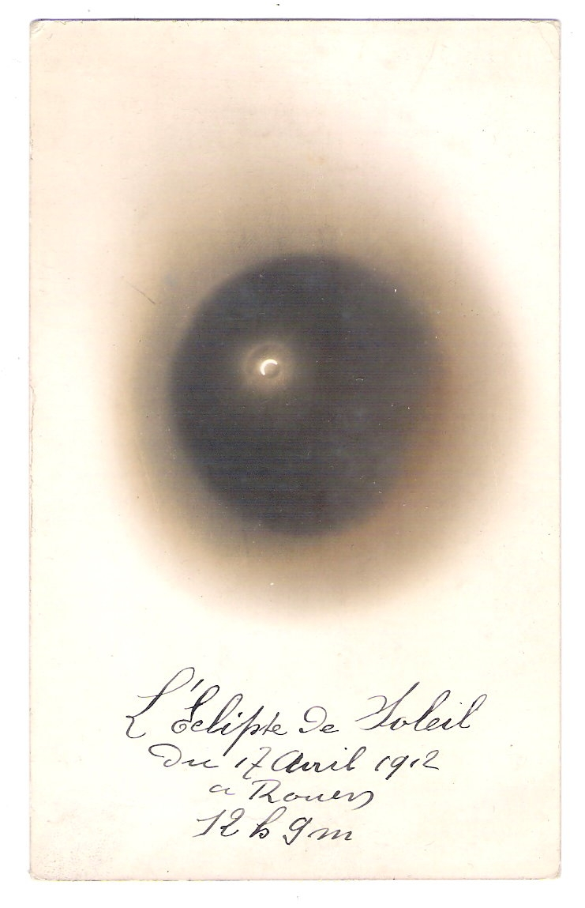
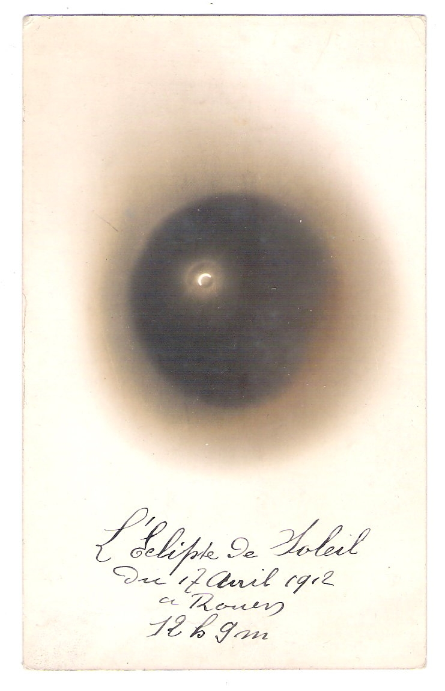

Le membre le plus éminent de l'Observatoire, au moment de sa création,
était sans conteste Dorothea Klumpke.
Citoyenne américaine, elle vécut 50 ans en France et fut la première femme à obtenir
le titre de Docteur en Astronomie à la Sorbonne. Elle participa à l'élaboration
de la carte du ciel et effectua des observations astronomiques en ballon.
Elle aida beaucoup l'Observatoire Astronomique de Rouen par son soutien matériel et moral.
Le 17 août 1885, Ludovic Gully découvre la supernova S Andromedae dans la galaxie d'Andromède,
grâce à un télescope de 160mm que nous possédons encore.
En 1895, l'Observatoire acquiert notre lunette de 160mm grâce
à une souscription publique initiée par un membre actif, M. Bouis.
Le 31 mars 1901, l'Observatoire inaugure, en présence de Dorothée Klumpke, un nouveau télescope de 300 mm de diamètre.
D'une taille considérable à l'époque pour un instrument d'amateur, ce télescope demeure pour nous un grand mystère,
car aucun résultat photographique ou observationnel ne lui est attribué dans nos archives.
On trouve une dernière mention le concernant dans un registre de 1929 qui le décrit comme "inutilisable et démonté"...
A-t-il jamais servi un jour?

 
